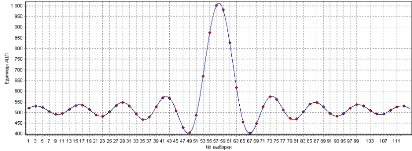
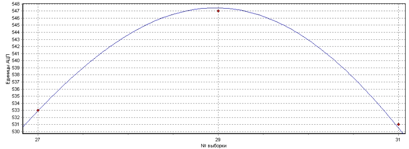
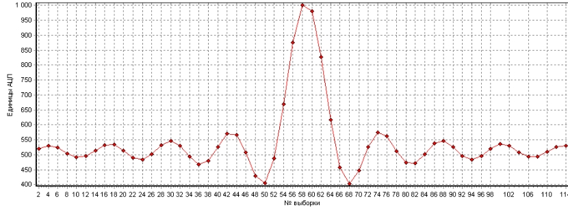
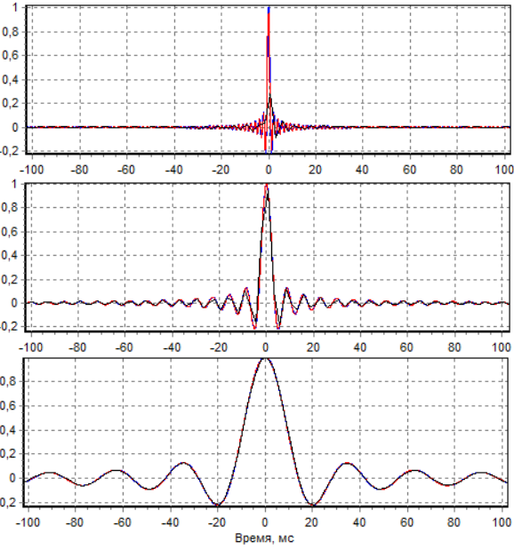
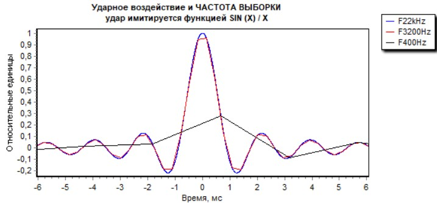
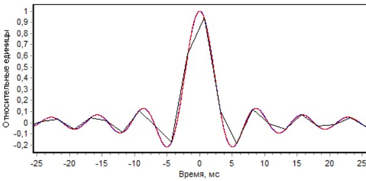
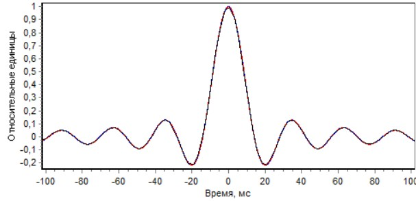
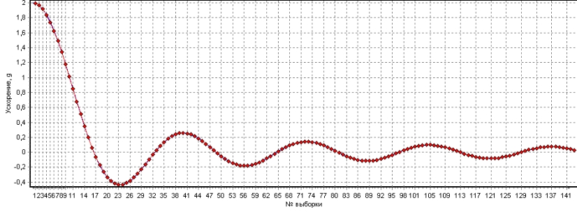
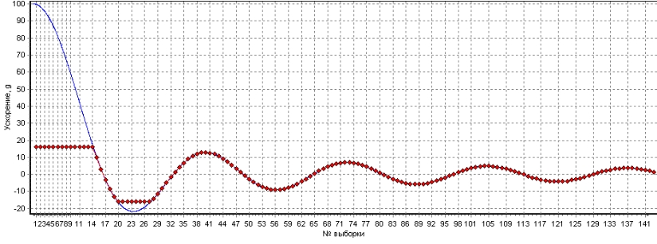
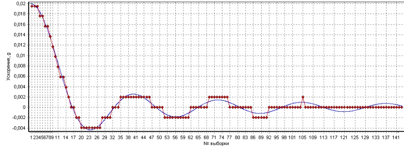

| акселерометры | - обзор предлагаемых устройств |
| прецизионный акселерометр |
-
измерение малых ускорений,
-
широкий динамический диапазон
|
| акселерометр Bluetooth | ВИДЕО Акселерометр Bluetooth -график в реальном времени |
| акселерометр USB | ВИДЕО 1 Измерения
акселерометром
USB с памятью =================== ВИДЕО 2 Синхронная запись ДВУМЯ акселерометрами USB |
| акселерометр RS-485 | ВИДЕО Измерения акселерометром RS-485 |
| акселерометры с аналоговыми выходами | |
| Ударные испытания транспорта | ВИДЕО Испытания ж/д цистерны на удар |
| Ударные испытания оборудования | ВИДЕО Испытания велосипедных шлемов на удар |
| Программное обеспечение |
| Параметры акселерометров |
| Применение акселерометров |










В этом вопросе существует небольшая терминологическая путаница: к примеру, определение перегрузки выше даёт для стоящего неподвижно человека перегрузку в 0g, но в таблице ниже этот же случай рассматривается как перегрузка в 1g. Похожий казус происходит также и при измерении давления: мы говорим — давление 0, подразумевая давление в одну атмосферу вокруг нас, учёный скажет — давление 0, подразумевая полное отсутствие молекул в данном объёме.
| Человек, стоящий неподвижно | 1 g |
| Пассажир в самолете при взлете | 1,5 g |
| Парашютист при приземлении со скоростью 6 м/с | 1,8 g |
| Парашютист при раскрытии парашюта (при изменении скорости от 60 до 5 м/с) | 5,0 g |
| Космонавты при спуске в космическом корабле «Союз» | до 3,0—4,0 g |
| Летчик при выполнении фигур высшего пилотажа | до 5 g |
| Летчик при выведении самолета из пикирования | 8,0—9 g |
| Перегрузка (длительная), соответствующая пределу физиологических возможностей человека | 8,0—10,0 g |
| Наибольшая (кратковременная) перегрузка автомобиля, при которой человеку удалось выжить | 214 g |